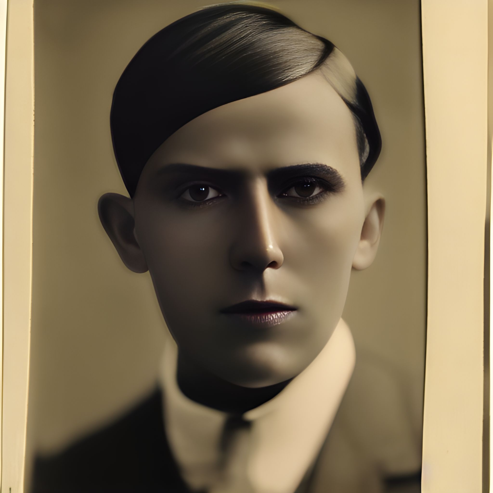
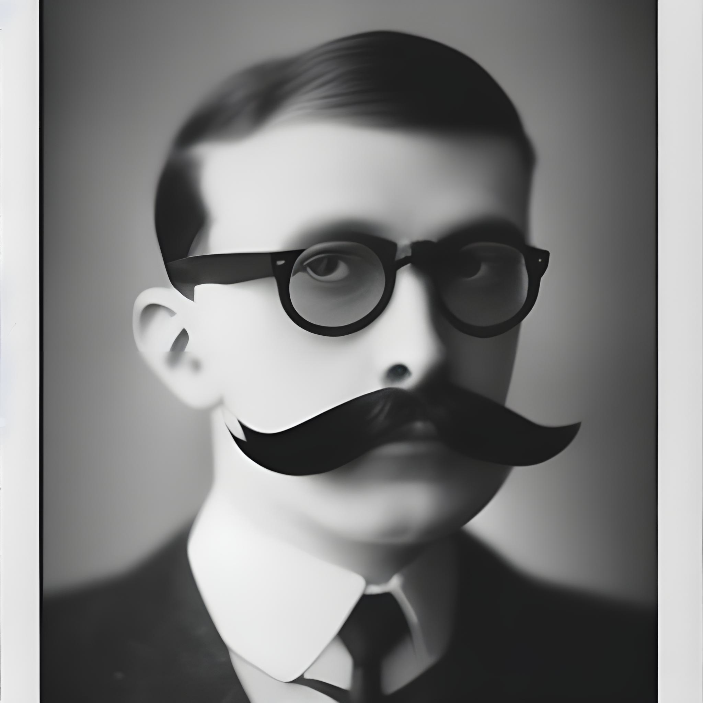
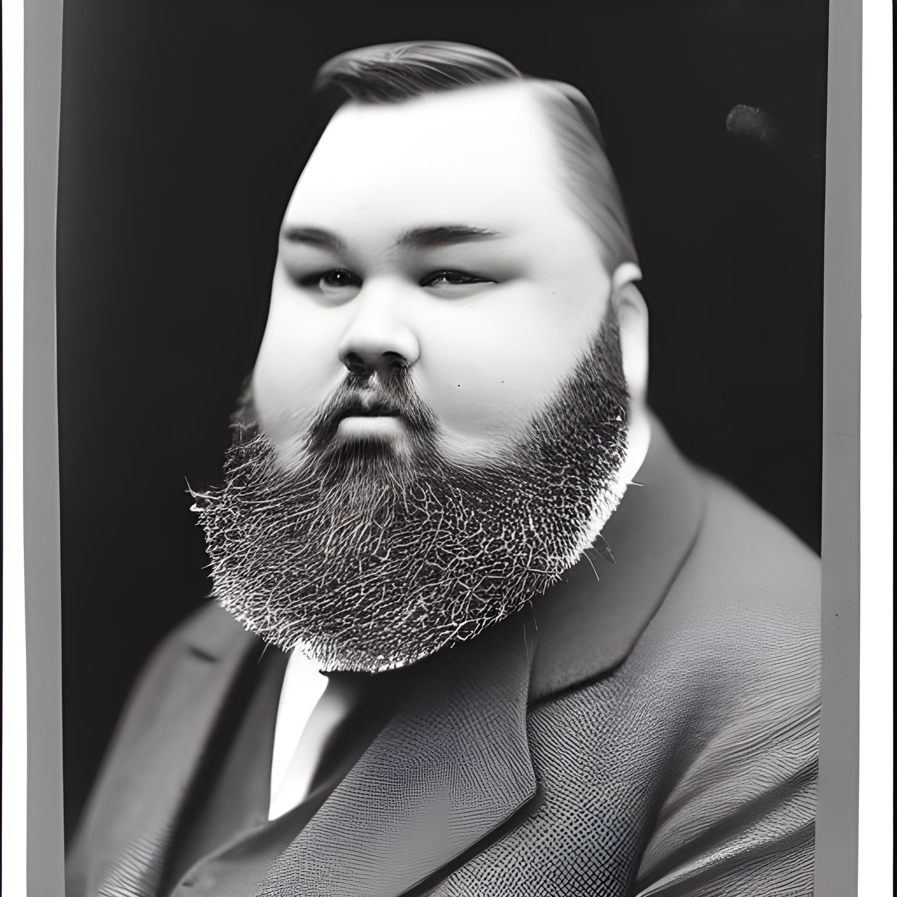
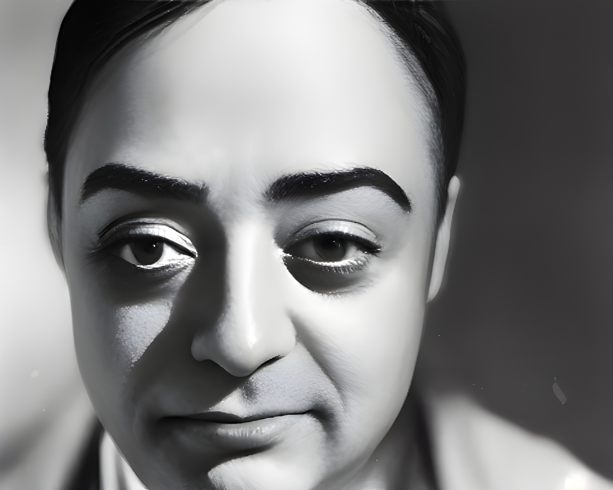
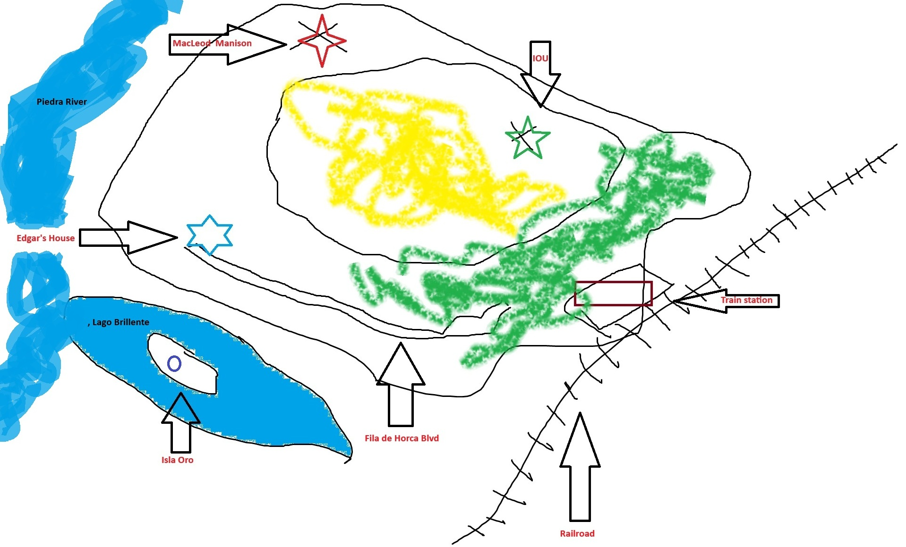
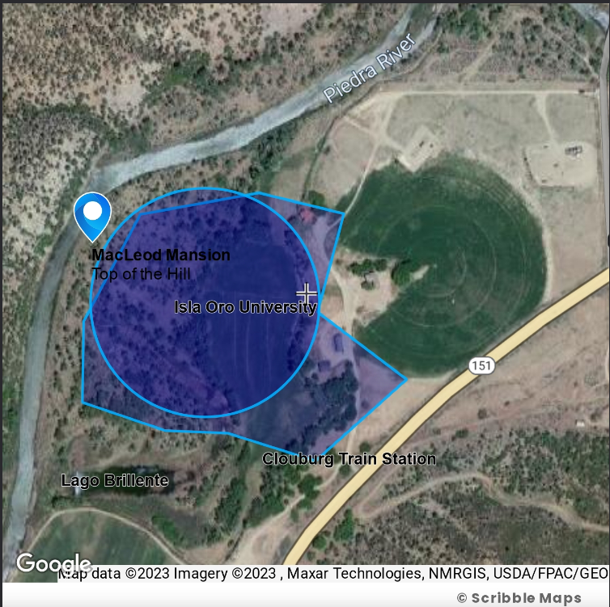
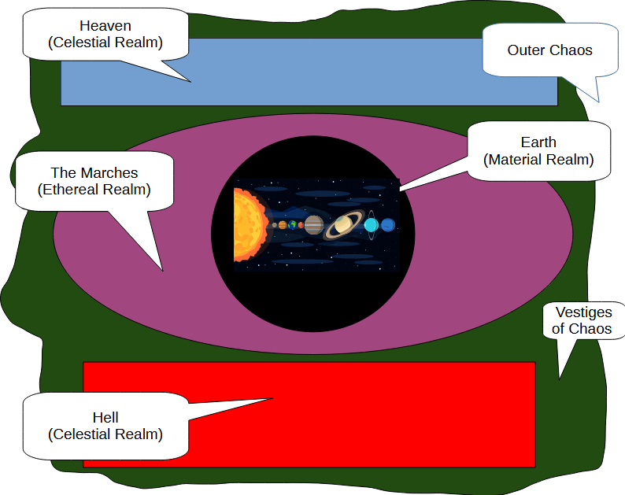
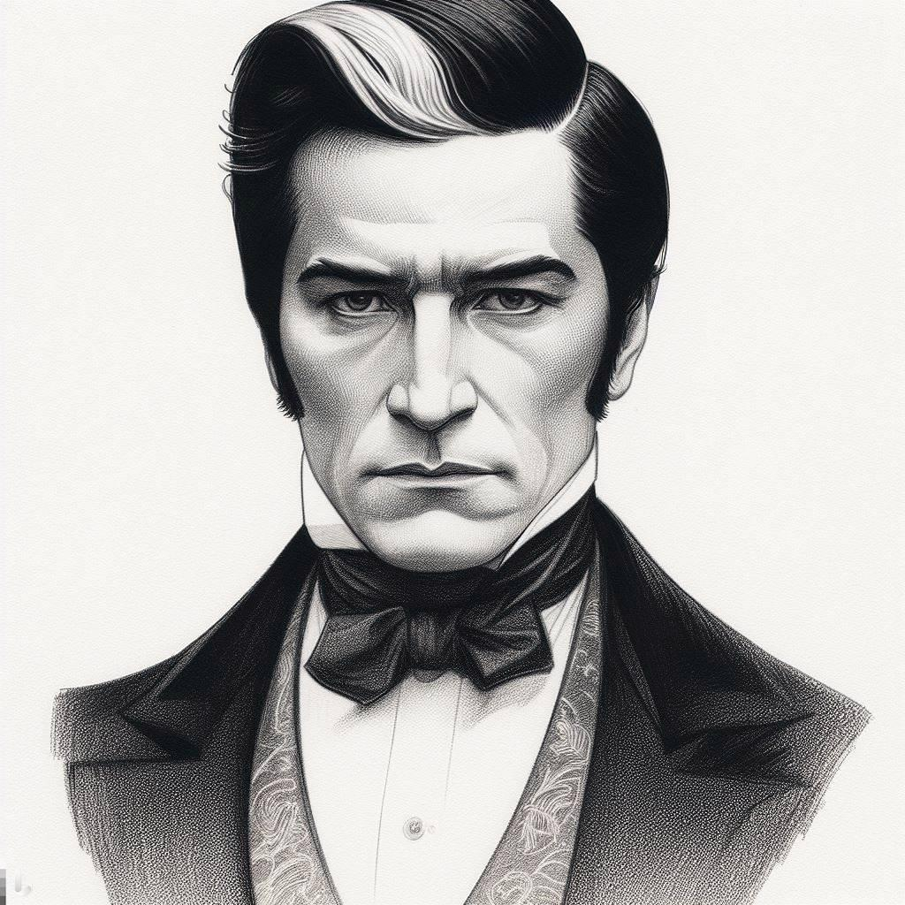
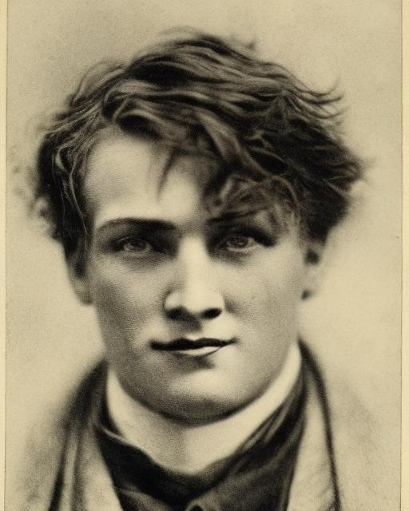

Front Matter
Reference Gallery
Visual and supporting reference material bundled into the reader packet: portraits, cosmology and map images, and linked source documents.
Portraits

Edgar Von Haupt
Campaign patron, occult administrator, and the connective tissue that draws the party into the Vault's orbit.

Doctor David Blunth
Early Cloudburg pressure point and one of the figures rooted in the campaign's pre-record local mystery web.

Doctor Hope
The more abstract, overcomposed side of the Chicago dream-research team and the procedure's primary presenter.

Doctor Mike
The grounded hypnotist and the steadier half of the Wet Dream Machine exposition pair.

Mr. Smoke
Campaign Origin: The core party of Crispin, Matthew, and Auggie encountered a chimneyrue during a pre-recording mission. A chimneyrue is a fragile creature of soot and smoke that anchors itself to a chimney with an umbilical cord and manipulates humans by harvesting their secrets. While intended as a simple "investigate and kill" monster, the players theorized it was a mastermind behind all their troubles. This table theory transformed the creature into the occult-supernatural "Keyser Söze" of the campaign: Mr. Smoke.
Maps and Cosmology

Diagram of the Cosmos
Tap or click the image to zoom.
A bundled cosmology image for FRH's larger metaphysical architecture and the layered realities behind the campaign.
{kind=link}

Cloudburg Rough Map
Tap or click the image to zoom.
A quick visual grounding for the fictional Colorado town that anchors the pre-record phase and the opening campaign state.

Cloudburg Notes Preview
A screenshot-style preview tied to the bundled Cloudburg notes document.

The Path of the Right Hand Preview
A visual companion to the bundled Path of the Right Hand document.
Linked Source Documents
- Chimneyrue Entry - the creature reference behind the small soot-spider that became Mr. Smoke.
- Cloudburg Colorado Notes - local setting notes for the fictional town and its underlying geography.
- Edgar Von Haupt Letter - a primary-document style handout bundled directly into the packet.
- The Path of the Right Hand - the bundled doctrine/history document for one of the campaign's key ideological strands.
Character Sheets

Ambrose Augustus Auggie Fontaine
The cultivated occult aspirant, social hinge, and future-seeking heart of the party.
Autafon Amber Deliamber
The healer, aura-reader, and quiet epistemic conscience of the group.

Crispin Pollick
The assassin, ghost-walker, and predatory edge of the campaign, shown here in the post-Smoke state.

Matthew Bridges
The gifted, unstable prodigy whose fame, wealth, psychometry, and insecurity keep opening the world wider.
Preston Henderson
The infernally compromised occult professional whose fear, curiosity, and luck shape the St. Louis branch.
Use in the packet: these pages are support material, not required reading order. They work best as front-matter extras a reader can consult before or during the main thread.
Best assembly placement: after the contents page and cast page and before the intro if you want the final Writer document to feel more like an annotated setting book.